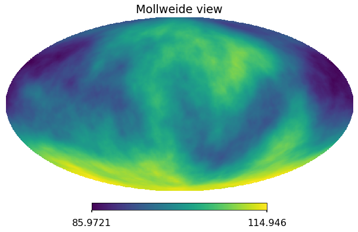
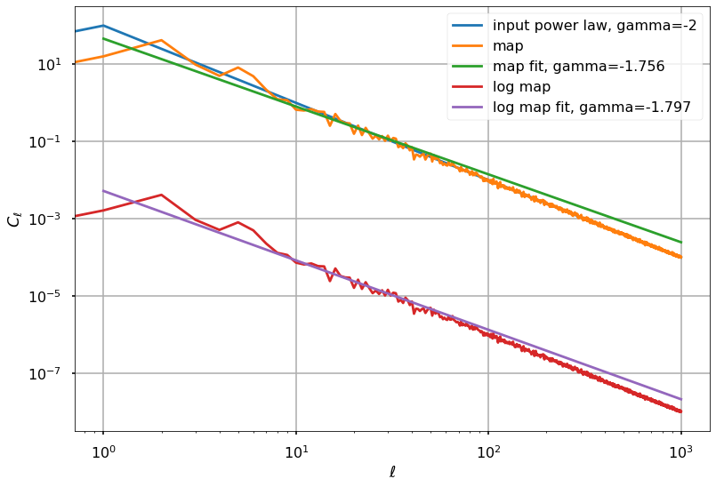

import numpy as np
import healpy as hp
import matplotlib.pyplot as plt
%matplotlib inline
hp.disable_warnings()plt.style.use("seaborn-poster")nside = 512
lmax = 1000
ell = np.arange(lmax+1, dtype=np.double)
cl_norm = ell * (ell + 1) / np.pi / 2
input_cl = 100 * ell ** (-2) / cl_norm
input_cl[0] = 0/global/u2/z/zonca/condanamaster/lib/python3.7/site-packages/ipykernel_launcher.py:5: RuntimeWarning: divide by zero encountered in power
"""m = 100 + hp.synfast(input_cl, nside=512)hp.mollview(m)
logm = np.log(m)cl_m = hp.anafast(m, lmax=lmax)
cl_logm = hp.anafast(logm, lmax=lmax)from scipy.optimize import curve_fitfit_ell = slice(10, lmax)def powerlaw(ell, A, gamma):
return A * ell ** gammacurve_fit(powerlaw, ell[fit_ell], (input_cl * cl_norm)[fit_ell])[0]array([100., -2.])m_fit = curve_fit(powerlaw, ell[fit_ell], (cl_m * cl_norm)[fit_ell])[0]logm_fit = curve_fit(powerlaw, ell[fit_ell], (cl_logm * cl_norm)[fit_ell])[0]plt.loglog(input_cl * cl_norm, label="input power law, gamma=-2")
plt.loglog(cl_m * cl_norm, label="map")
plt.loglog(powerlaw(ell, *m_fit), label=f"map fit, gamma={m_fit[1]:.3f}")
plt.loglog(cl_logm * cl_norm, label="log map")
plt.loglog(powerlaw(ell, *logm_fit), label=f"log map fit, gamma={logm_fit[1]:.3f}")
plt.ylabel("$C_\ell$")
plt.xlabel("$\ell$")
plt.grid()
plt.legend();/global/u2/z/zonca/condanamaster/lib/python3.7/site-packages/ipykernel_launcher.py:2: RuntimeWarning: divide by zero encountered in power
/global/u2/z/zonca/condanamaster/lib/python3.7/site-packages/ipykernel_launcher.py:2: RuntimeWarning: divide by zero encountered in power
